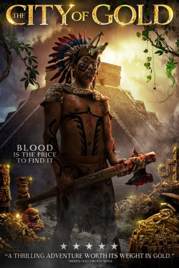
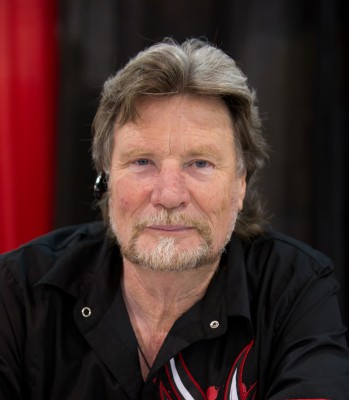
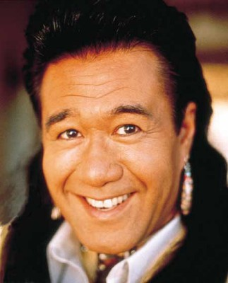

#11495 City of Gold
 
 IMDB-Wertung: 4.7 / 10
IMDB-Wertung: 4.7 / 10  Metascore: 0
Metascore: 0 
Jonathan Davenport, Sohn des Medienmagnats Richard Davenport, fällt aus allen Wolken als sein stinkreicher Vater plötzlich Suizid begeht. Um sich von seinen Schuldgefühen abzulenken reist er seiner Ex-Freundion hinterher zum Peruanischen Amazonas, wo die aufstrebende Galeristin einen einheimischen Künstler besuchen will. Bald stellen die beiden fest, dass eine Kunstreise in ein Gebiet, in dem Aufständische sorglos über Leben und Tod entscheiden, keine besonders gute Idee ist. Aus dem Worktrip wird ein Kampf ums Überleben. Während der Reise entdeckt Jonathan dann obendrein, dass etwas Düsteres in seinem Inneren lauert, das kurz davor steht, entfesselt zu werden.
Jahr: 2018
Dauer: 99 Minuten
FSK:
Land: USA Studio: Castle Shore FilmsTonspuren: - , - ,
Untertitel:
Auflösung: 1080p (1920x1080) Größe: 6123 MB
Genre: Action, Thriller, Horror, Abenteuer
Regisseur: Harry Locke IV
Drehbuch: Ronald A. Blum
Soundtrack: Jeffrey Hepker
Darsteller:
- Christopher Atkins als Richard Davenport
-  Vernon Wells als The Inquisitor
-  Branscombe Richmond als Shiniki
- John Charles Meyer als Jorge Escamilla
- Adrienne Whitney Papp als Dr. Madison
- Riley Dandy als Elisabeth Carlisle
- Jennifer Rikert Wolski als Kira
- Perry Kunin als Jack Harper
- Dmitri Raskes als Carlos Volkov
- Ronald A. Blum als Dr. Ron Berman
- Paul Hird als Phantom of the Inquisitor
- Walter Banasiak als Shining Path Leader
- Robbie Allen als Jon Davenport
- Jim Oxborrow als Vic
- Bethany Utke als Carlotta
- Cyndi Mayo als Maria Volkov
- Fernando Caballero als Ambrosious
- Will Gordon als Sacrificed Native
- Kevin Lapenia als Eddie
- Rodney Gemberling als Marcos
- Hunter Blanco als Rebel Girlfriend
- Brad Starks als Monk
- George Steven York als Monk #2
- Devorah S. Blum als Mrs. Berman
- Terani Richmond als Alonzo
- John Henry als Monk #3
- Richard Teston als Shaman
- Ray Fite als Kirk
Datei: X:\2018(A-F)\City of Gold (2018, FSK, 1920x1080).mkv seit 16.07.2019
Festplatte: HD 2017(A-Z)-2018(A-F)
 Es gibt insgesamt 151 Filme in der Gruppe '2018(A-F)'
Es gibt insgesamt 151 Filme in der Gruppe '2018(A-F)'